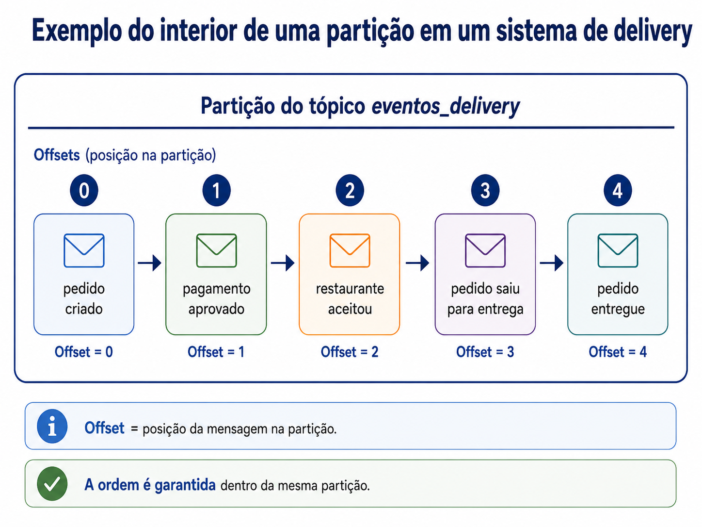
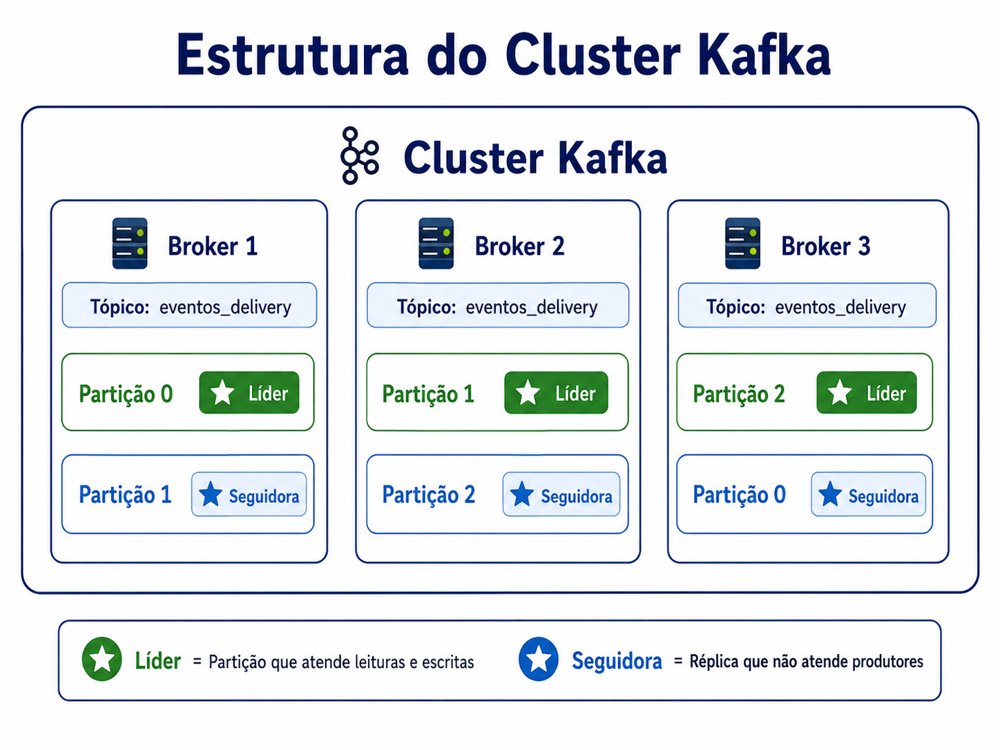
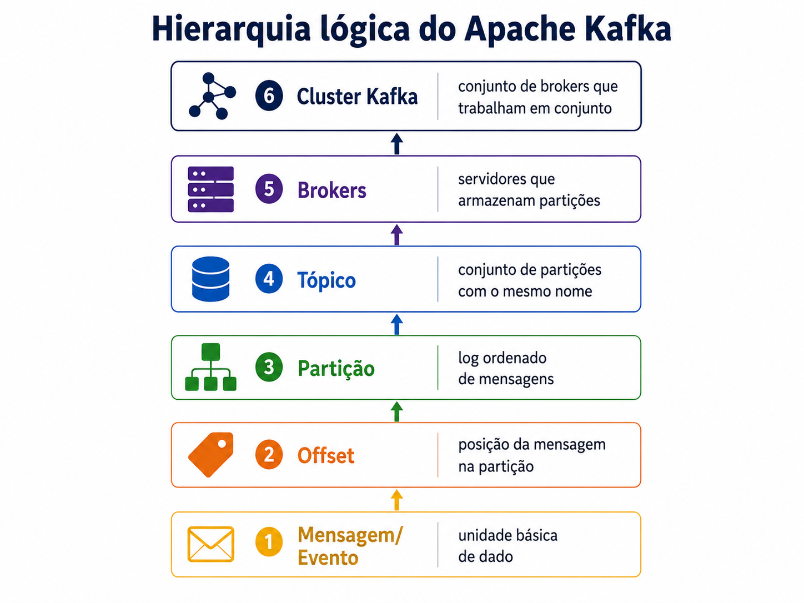

Introdução
1.1 O que é o Apache Kafka

O Apache Kafka é uma plataforma de streaming de eventos distribuída de código aberto, utilizada para coletar, processar e armazenar dados de eventos em tempo real . Ele é frequentemente descrito como um log de confirmação distribuído ou sistema de mensagens do tipo publicação/assinatura projetado para lidar com grandes volumes de dados (bilhões de eventos por minuto) de forma escalável e resiliente . Originalmente criado pelo LinkedIn em 2011 para resolver problemas de pipelines de dados internos, o Kafka tornou-se o padrão de mercado para fluxos de eventos, sendo utilizado hoje por mais de 80% das empresas Fortune 500.
Como Funciona?
O funcionamento do Kafka baseia-se em cinco funções e componentes principais:- Publicar: Fontes de dados (produtores) enviam fluxos de eventos para categorias chamadas tópicos
- Consumir: Aplicativos (consumidores) assinam esses tópicos para ler, extrair e processar os dados conforme necessário
- Processar: Através da API Kafka Streams, a plataforma pode atuar como um processador, consumindo dados de entrada e produzindo novos fluxos de saída transformados em tempo real
- Conectar: Utiliza o Kafka Connect para criar conexões reutilizáveis que integram tópicos do Kafka a aplicativos e bancos de dados existentes
Diferenciais e Arquitetura
Diferente de sistemas de filas tradicionais (como o RabbitMQ), que geralmente excluem mensagens após o consumo, o Kafka retém os dados, permitindo que múltiplos consumidores leiam a mesma informação de forma independente Sua infraestrutura é composta por um cluster de servidores (brokers) . Para garantir a escalabilidade e a tolerância a falhas, os tópicos são divididos em partições, que são distribuídas e replicadas entre os diferentes brokers do cluster . Isso garante que, se um servidor falhar, os dados permaneçam disponíveis em outros nós.Principais Casos de Uso
- Rastreamento de Atividade: Monitorar cliques e ações de usuários em sites para gerar relatórios ou alimentar sistemas de recomendação
- Métricas e Logging: logs de sistemas e métricas de aplicativos de forma centralizada
- Microsserviços: Facilitar a comunicação assíncrona e desacoplada entre diferentes serviços de uma aplicação
- Pipelines de Dados: Mover grandes volumes de dados de forma confiável entre sistemas empresariais e plataformas de Big Data ou Data Lakes
1.2 Origem
O Apache Kafka teve sua origem no LinkedIn para resolver problemas críticos de infraestrutura relacionados a pipelines de dados e processamento em tempo real . A empresa precisava de um sistema de alto desempenho que pudesse lidar com bilhões de eventos diários, algo que as ferramentas existentes na época não conseguiam suportar.Problema no LinkedIn
Originalmente, o LinkedIn possuía sistemas separados para coletar métricas e rastrear atividades de usuários (cliques, visualizações de perfil, etc.) . Essas soluções eram ineficientes, exigiam intervenção humana constante e tinham atrasos de horas no processamento . A empresa chegou a testar soluções como o ActiveMQ, mas elas se mostraram frágeis e incapazes de escalar para o volume de tráfego necessárioOs Criadores
 Diante da necessidade de uma solução customizada, uma equipe interna liderada por Jay Kreps, Neha Narkhede e Jun Rao desenvolveu o Kafka
. Eles buscaram criar um sistema que combinasse a interface de mensageria tradicional com uma camada de armazenamento persistente semelhante a um log de agregação
.
Diante da necessidade de uma solução customizada, uma equipe interna liderada por Jay Kreps, Neha Narkhede e Jun Rao desenvolveu o Kafka
. Eles buscaram criar um sistema que combinasse a interface de mensageria tradicional com uma camada de armazenamento persistente semelhante a um log de agregação
.
Sendo assim, os objetivos principais do projeto eram:
- Desacoplar: produtores e consumidores usando um modelo de "empurrar e puxar" (push-pull)
- Garantir: a persistência das mensagens para permitir que múltiplos consumidores as lessem de forma independente
- Otimizar: para alto rendimento (throughput) e permitir a escalabilidade horizontal à medida que os dados crescessem
Evolução para Código Aberto
- 2010: O Kafka foi lançado como um projeto de código aberto no GitHub no final do ano
- 2011: Em julho, foi aceito como um projeto de incubação na Apache Software Foundation
- 2012: Graduou-se como um projeto de nível superior da fundação em outubro
- 2014: Os fundadores originais deixaram o LinkedIn para fundar a Confluent, focada em fornecer suporte e serviços empresariais para o Kafka
Origem do Nome
O nome foi escolhido por Jay Kreps em homenagem ao escritor Franz Kafka . Kreps, que gostava das aulas de literatura na faculdade, pensou que, por ser um sistema otimizado para escrita, o nome de um escritor faria sentido . Além disso, ele considerou que "Kafka" soava bem para um projeto de código aberto, embora não exista uma relação técnica direta entre o autor e a aplicação .
1.3 Dados em Movimento
O conceito de dados em movimento (data in motion) é central para a arquitetura do Apache Kafka, representando uma mudança de paradigma em relação ao processamento tradicional de dados . Enquanto os bancos de dados relacionais e sistemas de armazenamento convencionais focam no gerenciamento de dados em repouso (data at rest), o Kafka foi projetado para lidar com o fluxo contínuo e evolutivo de informações que circulam em uma organização .
- A Fundação dos Dados em Movimento: O Kafka é considerado a fundação de fato para qualquer plataforma que gerencie dados em movimento, servindo como o sistema circulatório que conecta centenas de aplicações, microsserviços e sistemas de análise em tempo real.
- Streaming de Eventos: O gerenciamento de dados em movimento é realizado através do streaming de eventos, que consiste no processamento contínuo de fluxos infinitos de registros à medida que são criados . Isso permite capturar o valor temporal dos dados, permitindo que as empresas reajam instantaneamente a eventos à medida que eles ocorrem, em vez de esperar por processamentos em lote (batch) que podem levar horas ou dias.
- Fluxos como Ativos Centrais: Em uma empresa digital moderna, esses fluxos de dados são vistos como o aspecto mais central da operação, sendo comparados em importância aos fluxos de caixa em um demonstrativo financeiro.
- Abstração de Streaming: O Kafka permite tratar os dados não como pilhas estáticas, mas como um log de confirmação distribuído, onde cada evento é registrado de forma durável e ordenada, permitindo que múltiplos consumidores leiam e processem a mesma informação de forma independente.
- Desacoplamento de Timelines: Ao atuar como um buffer gigante e confiável, o Kafka desacopla a sensibilidade temporal entre quem produz os dados e quem os consome . Isso permite que um produtor envie dados em tempo real enquanto um consumidor os processa em lotes diários, ou vice-versa, sem perda de integridade.
- Aplicações Práticas: Exemplos típicos de dados em movimento incluem o monitoramento do comportamento de clientes em sites de e-commerce, análise de telemetria de dispositivos IoT e detecção de fraudes financeiras em milissegundos.
Diferente das filas de mensagens tradicionais que excluem dados após o consumo, a capacidade do Kafka de reter dados em movimento por períodos configuráveis permite que eventos passados sejam relidos e reprocessados deterministicamente, o que é essencial para corrigir erros ou realizar novas análises sobre o histórico.
Conceitos Fundamentais
2.1 Mensagens e Batches
Mensagens
A unidade de dados fundamental dentro do Apache Kafka é denominada mensagem, que pode ser compreendida de forma análoga a uma linha ou a um registro em um banco de dados tradicional . Para o sistema Kafka, uma mensagem é tratada apenas como um array de bytes, o que significa que a plataforma não impõe nem interpreta um formato ou significado específico para o conteúdo dos dados.
Além do valor principal, uma mensagem pode conter uma peça opcional de metadados chamada chave, também composta por um array de bytes, que é utilizada para controlar de maneira mais precisa em qual partição de um tópico a mensagem será gravada . Através do uso de chaves e algoritmos de hash consistentes, o Kafka garante que todas as mensagens com a mesma chave sejam sempre direcionadas para a mesma partição, mantendo assim a ordem de leitura para esses registros específicos.
Batches
Para otimizar o desempenho, as mensagens não são enviadas individualmente, mas sim em batches. Um lote é uma coleção de mensagens destinadas ao mesmo tópico e à mesma partição. Enviar cada mensagem individualmente pela rede geraria um custo de comunicação (overhead) excessivo. O agrupamento em lotes reduz drasticamente o número de viagens de ida e volta (round trips) pela rede.
Compressão: Os lotes são tipicamente comprimidos (usando algoritmos como Gzip, Snappy, Lz4 ou Zstd). Isso torna a transferência e o armazenamento em disco muito mais eficientes, embora exija um pouco mais de CPU para processar a compressão e descompressão
O Compromisso entre Latência e Vazão
- Vazão(Throughput): Quanto maiores os lotes, mais mensagens o sistema consegue processar por segundo, aproveitando melhor a largura de banda e a compressão.
- Latência: Lotes maiores podem aumentar o tempo que uma mensagem individual leva para ser entregue, pois o sistema precisa esperar o lote "encher" ou atingir um tempo limite antes de enviá-lo.
Parâmetros de Controle do Produtor
O cliente produtor controla o comportamento dos lotes através de duas configurações principais:
- batch.size: Define o limite de memória (em bytes) para cada lote. Quando o lote atinge esse tamanho, ele é enviado imediatamente.
- linger.ms: Faz o produtor esperar um determinado número de milissegundos para que mais mensagens sejam adicionadas ao lote antes do envio, mesmo que o tamanho máximo ainda não tenha sido atingido . Por padrão, o Kafka envia as mensagens assim que um thread de envio está disponível, mas configurar um pequeno atraso (como linger.ms=10) aumenta a chance de enviar mais mensagens juntas, melhorando o desempenho.
Processamento no Broker
A partir da evolução para o formato de mensagem v2 na versão 0.11, o Kafka passou a exigir que as mensagens sejam sempre enviadas em lotes, introduzindo cabeçalhos que contêm metadados detalhados como offsets iniciais, atributos de compressão e somas de verificação para garantir a integridade .
Dentro desses lotes modernos, cada registro individual armazena apenas a diferença em relação ao offset e ao carimbo de tempo inicial do batch, o que reduz drasticamente o overhead por mensagem e melhora a escalabilidade do sistema .
2.2 Tópicos e Partições
Tópicos
Um tópico é uma categoria ou nome de feed no qual as mensagens são publicadas. Sendo assim, um tópico é semelhante a uma tabela de banco de dados, ou uma pasta em um sistema de arquivos. Além disso, uma vez que um registro é gravado em um tópico, ele não pode ser alterado ou excluído (embora expire após um período configurável). É importante ressaltar que um tópico pode ter vários produtores enviando dados e vários consumidores lendo de forma independente.
Partições
Cada tópico é decomposto em uma ou mais partições . Uma partição é um log de confirmação distribuído onde as mensagens são gravadas de forma sequencial (apenas anexação) . O Kafka garante a ordem das mensagens apenas dentro de uma partição individual, não em todo o tópico.
Sendo assim, as partições são o mecanismo que permite ao Kafka escalar horizontalmente. Cada partição pode ser hospedada em um servidor (broker) diferente, permitindo que um único tópico seja distribuído por todo o cluster para lidar com volumes massivos de dados. É importante salientar que cada mensagem dentro de uma partição recebe um número de identificação exclusivo e crescente chamado offset . Os consumidores usam esse offset para rastrear sua posição de leitura.

Figura 3: Exemplo do interior de uma partição em um sistema de delivery. Cada evento ocupa uma posição na partição, chamada offset.
Redundância e Replicação
- Replicação: Para garantir a disponibilidade, as partições podem ser replicadas em vários servidores.
- Líderes e Seguidores: Cada partição possui um único broker que atua como líder, lidando com todas as solicitações de leitura e escrita, enquanto outros brokers atuam como seguidores, apenas replicando os dados do líder.
- Tolerância a Falhas: Se o broker líder falhar, um dos seguidores em sincronia (ISR) é automaticamente eleito como o novo líder.
Produção e Consumo por Partição
No Apache Kafka, a eficiência na movimentação de dados é garantida por mecanismos específicos de produção e consumo vinculados às partições dos tópicos. Por padrão, os produtores realizam o balanceamento de carga distribuindo as mensagens de forma uniforme entre todas as partições de um tópico, o que otimiza a utilização dos recursos do cluster . Entretanto, esse comportamento pode ser personalizado através do uso de chaves, onde, se uma mensagem contiver uma chave, o Kafka aplica um algoritmo de hash consistente para direcioná-la a uma partição específica . Esse processo assegura que todas as mensagens com a mesma chave sejam sempre gravadas na mesma partição, o que é fundamental para preservar a ordem de leitura cronológica desses registros específicos .
No lado do consumo, o escalonamento é realizado através dos grupos de consumidores, que permitem que múltiplas instâncias de uma aplicação dividam o trabalho de leitura de um tópico . Dentro de um grupo, o Kafka estabelece uma coordenação que garante que cada partição seja lida por apenas um membro do grupo por vez, criando um mapeamento de exclusividade frequentemente chamado de "propriedade" da partição . Essa estrutura possibilita o escalonamento horizontal do processamento, permitindo que novos consumidores sejam adicionados para dividir a carga de trabalho até que o número de consumidores atinja o limite do número de partições existentes no tópico, ponto após o qual novos membros permaneceriam inativos sem partições atribuídas para processar
Considerações de Gerenciamento
- Escolha da Quantidade: O número de partições deve ser decidido com base na vazão (throughput) desejada . Uma fórmula comum é dividir a vazão total esperada pela vazão que um único consumidor consegue processar.
- Alterações: É possível aumentar o número de partições de um tópico existente, mas nunca diminuí-lo, pois isso causaria perda de dados e inconsistências.
3 Arquitetura e Componentes
3.1 Produtores e Consumidores
Na arquitetura do Apache Kafka, os produtores e os consumidores representam as aplicações que se comunicam por meio da plataforma. Os produtores são responsáveis por publicar eventos nos tópicos, enquanto os consumidores leem esses eventos para executar algum processamento, atualizar sistemas ou gerar informações para outras aplicações.
Essa comunicação não ocorre diretamente entre produtor e consumidor. Em vez disso, o produtor envia a mensagem para o Kafka, que armazena o evento em um tópico. Depois, um ou mais consumidores podem ler esse evento. Essa característica reduz o acoplamento entre sistemas, pois quem produz a informação não precisa saber exatamente quais aplicações irão consumi-la.
Produtores
Um produtor é qualquer aplicação capaz de enviar mensagens para um tópico Kafka. Por exemplo, um site de comércio eletrônico pode produzir eventos como pedido criado, pagamento aprovado ou produto visualizado. Cada um desses eventos pode ser enviado para um tópico específico, como pedidos, pagamentos ou cliques.
- O produtor publica mensagens em tópicos.
- As mensagens podem ser enviadas com uma chave, usada para definir em qual partição elas serão armazenadas.
- Mensagens com a mesma chave tendem a ser enviadas para a mesma partição, o que ajuda a preservar a ordem desses eventos.
- O envio pode ser feito de forma assíncrona, favorecendo desempenho e escalabilidade.
Consumidores
Um consumidor é uma aplicação que lê mensagens armazenadas nos tópicos do Kafka. Diferentes consumidores podem ler o mesmo tópico para finalidades distintas. Por exemplo, a partir de um evento de pagamento aprovado, um sistema pode enviar uma notificação ao cliente, outro pode atualizar um painel de vendas e outro pode alimentar um sistema antifraude.
- O consumidor lê mensagens dos tópicos.
- Ele controla sua posição de leitura por meio do offset.
- Como as mensagens permanecem armazenadas por um período configurável, consumidores diferentes podem ler os mesmos eventos de forma independente.
- Isso permite reprocessar dados antigos, criar novos serviços consumidores e recuperar falhas sem depender diretamente do produtor.
Grupos de Consumidores
Para aumentar a capacidade de processamento, o Kafka permite organizar consumidores em grupos de consumidores. Dentro de um mesmo grupo, as partições de um tópico são distribuídas entre os consumidores disponíveis. Assim, o trabalho de leitura pode ser dividido entre várias instâncias da mesma aplicação.
Por exemplo, se um tópico possui três partições, três consumidores de um mesmo grupo podem processar os dados em paralelo, cada um lendo uma partição. Essa divisão é uma das razões pelas quais o Kafka consegue lidar com grandes volumes de dados.
Importante: diferente de uma fila tradicional, em que a mensagem costuma ser removida após o consumo, no Kafka os eventos podem permanecer armazenados por um tempo definido. Isso permite que vários consumidores leiam os mesmos dados em momentos diferentes.
Exemplo prático
Considere uma compra realizada em uma loja virtual. O sistema de vendas atua como produtor e publica o evento compra realizada em um tópico do Kafka. A partir desse mesmo evento, diferentes consumidores podem executar tarefas independentes: o sistema de pagamento valida a transação, o sistema de estoque atualiza a quantidade disponível, o sistema de e-mail envia a confirmação ao cliente e o sistema de análise registra a venda para relatórios.
Dessa forma, o Kafka funciona como um intermediário entre os sistemas, permitindo comunicação em tempo real, maior organização dos dados e menor dependência direta entre as aplicações.
3.2 Brokers e Clusters
No Apache Kafka, um broker é um servidor responsável por receber, armazenar e disponibilizar mensagens para os consumidores. Em uma aplicação real, normalmente o Kafka não é executado em apenas um servidor, mas em um conjunto de brokers que trabalham de forma coordenada.
Esse conjunto de brokers recebe o nome de cluster Kafka. O cluster permite distribuir a carga de trabalho entre diferentes servidores, aumentando a capacidade de processamento e reduzindo a dependência de uma única máquina.
É importante observar que um broker não precisa armazenar um tópico inteiro. Na prática, o Kafka distribui as partições dos tópicos entre os brokers, o que permite que o sistema processe um volume maior de eventos, pois a leitura e a escrita não ficam concentradas em um único broker.
3.3 Replicação e Alta Disponibilidade
A replicação é o mecanismo usado pelo Kafka para aumentar a tolerância a falhas. Em vez de manter uma partição armazenada em apenas um broker, o Kafka pode criar cópias dessa partição em outros brokers do cluster. Essas cópias são chamadas de réplicas.
Para cada partição, uma das réplicas atua como líder, responsável por atender as operações principais de leitura e escrita daquela partição. As demais réplicas atuam como seguidoras, mantendo cópias atualizadas dos dados armazenados pelo líder. Se o Broker do líder falhar, uma das réplicas seguidoras pode ser escolhida como novo líder, o que garante o funcionamento do sistema mesmo diante da falha de um servidor.

Figura 2: Exemplo de cluster Kafka com três brokers. Cada broker armazena partições de um tópico, podendo haver partições líderes e réplicas seguidoras.
Alta disponibilidade
A alta disponibilidade significa que o sistema continua acessível mesmo quando parte da infraestrutura apresenta falhas. No Kafka, isso é obtido pela combinação de cluster, distribuição de partições e replicação.
Em um sistema de delivery, por exemplo, perder eventos como pagamento aprovado ou pedido saiu para entrega poderia causar inconsistências graves. A replicação reduz esse risco, pois mantém cópias dos dados em mais de um broker.

Figura 4: Hierarquia lógica do Apache Kafka. A unidade básica é a mensagem ou evento; o offset indica sua posição na partição; partições formam tópicos; tópicos são distribuídos entre brokers dentro de um cluster.
3.4 Evolução da Coordenação
Além de armazenar mensagens, o Kafka precisa coordenar várias informações internas do cluster. Por exemplo, é necessário saber quais brokers estão ativos, qual broker é o líder de cada partição, onde estão as réplicas e como o cluster deve reagir quando uma máquina falha.
Nas versões mais antigas, essa coordenação era feita com o auxílio de uma ferramenta externa chamada Apache ZooKeeper. O ZooKeeper era responsável por manter metadados do cluster e ajudar na eleição de líderes das partições.
Uso do ZooKeeper
Com o ZooKeeper, a arquitetura do Kafka ficava dividida em duas partes principais: o cluster Kafka, formado pelos brokers, e o cluster ZooKeeper, usado para coordenação. Embora essa solução funcionasse, ela aumentava a complexidade operacional, pois era necessário administrar dois sistemas distribuídos ao mesmo tempo.
KRaft
Com a evolução do Kafka, foi introduzido o modo KRaft, que elimina a dependência do ZooKeeper. Nesse modelo, o próprio Kafka passa a gerenciar os metadados do cluster usando um mecanismo de consenso interno baseado no protocolo Raft.
Na prática, essa mudança simplifica a arquitetura, reduz a quantidade de componentes externos e torna o gerenciamento do cluster mais integrado ao próprio Kafka.
4 O Ecossistema de APIs
O Apache Kafka expõe suas funcionalidades por meio de um conjunto de APIs bem definidas, que juntas formam um ecossistema completo para produção, consumo, transformação e integração de dados em tempo real. Cada API foi projetada para um papel específico dentro da arquitetura orientada a eventos.
4.1 Producer e Consumer APIs
API Producer
A API Producer permite que qualquer aplicação publique fluxos de eventos em um ou mais tópicos do Kafka. Uma vez que um registro é gravado em um tópico, ele não pode ser alterado ou excluído — ele permanece disponível pelo período de retenção configurado (por padrão, 7 dias, ou até o limite de armazenamento ser atingido).
O produtor é responsável por determinar em qual partição do tópico cada mensagem será gravada. Esse roteamento pode ser feito de três formas:
- Round-robin (padrão): As mensagens são distribuídas uniformemente entre todas as partições disponíveis, garantindo balanceamento de carga.
- Por chave (key-based): Quando uma chave é fornecida, um hash consistente garante que todas as mensagens com a mesma chave sempre vão para a mesma partição, preservando a ordem de entrega.
- Particionador customizado: O desenvolvedor pode implementar sua própria lógica de roteamento para casos de uso específicos.
Além disso, o produtor oferece três modos de confirmação de entrega (acks) para equilibrar desempenho e durabilidade: acks=0 (sem confirmação), acks=1 (confirmação apenas do líder) e acks=all (confirmação de todas as réplicas em sincronia).
API Consumer
A API Consumer permite que aplicações se inscrevam em um ou mais tópicos e processem os fluxos de eventos armazenados. Uma de suas características mais poderosas é a flexibilidade de leitura: um consumidor pode ler eventos em tempo real ou retroceder para um offset específico e reprocessar registros históricos, o que é essencial para corrigir erros ou realizar novas análises.
Os consumidores são organizados em grupos de consumidores. Dentro de um grupo, o Kafka garante que cada partição de um tópico seja processada por apenas um consumidor por vez. Isso cria um modelo de exclusividade de partições que permite o escalonamento horizontal: adicionar novas instâncias de um consumidor ao grupo distribui automaticamente a carga de trabalho.
- Escalabilidade: O número máximo de consumidores úteis em um grupo é igual ao número de partições do tópico. Consumidores excedentes ficam inativos aguardando uma realocação.
- Múltiplos grupos independentes: Grupos diferentes podem ler o mesmo tópico de forma completamente independente, sem interferência mútua — cada grupo mantém seu próprio offset de leitura.
- Rebalanceamento: Quando um consumidor entra ou sai do grupo, o Kafka realiza um rebalanceamento automático, redistribuindo as partições entre os membros ativos.
4.2 Kafka Connect
O Kafka Connect é um framework dedicado à integração do Kafka com sistemas externos, como bancos de dados relacionais, sistemas de arquivos, serviços de nuvem e plataformas de análise. Seu objetivo é eliminar a necessidade de escrever código de integração customizado, fornecendo conectores reutilizáveis e configuráveis.
Tipos de Conectores
- Source Connectors (Conectores de Origem): Leem dados de um sistema externo e os publicam em tópicos do Kafka. Por exemplo, um conector JDBC pode monitorar alterações em tabelas de um banco de dados relacional e transmiti-las em tempo real para o Kafka.
- Sink Connectors (Conectores de Destino): Consomem mensagens de tópicos do Kafka e as gravam em sistemas externos, como um data warehouse, um índice de busca (Elasticsearch) ou um data lake no Amazon S3.
Principais Características
- Escalabilidade horizontal: O Connect pode ser executado em modo distribuído (cluster), onde múltiplos workers compartilham a carga de trabalho dos conectores ativos.
- Tolerância a falhas: Em caso de falha de um worker, as tarefas são automaticamente redistribuídas entre os workers restantes do cluster, sem perda de dados.
- Ecossistema amplo: Existe um vasto catálogo de conectores prontos para uso — tanto da Apache quanto de fornecedores como Confluent — cobrindo desde bancos de dados (PostgreSQL, MySQL, MongoDB) até plataformas de nuvem (AWS S3, Google BigQuery) e ferramentas de monitoramento.
- Transformações simples (SMT): O Connect suporta transformações leves dos dados durante a ingestão ou a entrega, como renomear campos, filtrar registros ou converter formatos, sem necessidade de um processador de streams dedicado.
Na prática, o Kafka Connect atua como a "camada de encanamento" da arquitetura de dados, conectando fontes e destinos ao pipeline central do Kafka de forma padronizada e confiável.
4.3 Kafka Streams
A Kafka Streams API é uma biblioteca cliente para construir aplicações de processamento de fluxos diretamente sobre o Kafka. Diferente de frameworks externos como Apache Spark ou Apache Flink, o Kafka Streams é uma biblioteca Java — não requer um cluster separado de processamento. A aplicação é simplesmente um processo Java comum que se conecta ao cluster Kafka.
Modelo de Processamento
O Kafka Streams consome eventos de um ou mais tópicos de entrada, os transforma, agrega ou enriquece, e publica os resultados em tópicos de saída — de forma contínua e em tempo real. Ele suporta dois tipos de abstração:
- KStream: Representa um fluxo infinito de eventos individuais. Cada registro é tratado de forma independente. Ideal para transformações stateless (sem estado), como filtros e mapeamentos.
- KTable: Representa uma visão atualizada de um conjunto de dados, onde cada nova mensagem com uma chave existente substitui o valor anterior. É equivalente a uma tabela de banco de dados que evolui com o tempo.
Recursos Avançados
- Janelas de Tempo (Windowing): Permite agregar eventos em janelas temporais (ex.: "total de vendas nos últimos 5 minutos"), sendo fundamental para métricas e análises em tempo real.
- Joins entre Streams e Tables: É possível enriquecer um fluxo de eventos (KStream) com dados de referência de uma tabela (KTable), como adicionar informações de produto a um fluxo de pedidos.
- State Stores: Para processamento com estado, o Kafka Streams mantém armazenamentos locais (baseados em RocksDB) que são automaticamente replicados no Kafka, garantindo tolerância a falhas e reprocessamento determinístico.
- Exatamente Uma Vez (Exactly-Once Semantics): A partir da versão 0.11, o Kafka Streams garante que cada evento seja processado exatamente uma vez, mesmo em caso de falhas, eliminando duplicatas nos resultados.
A combinação das APIs Producer/Consumer com o Kafka Connect e o Kafka Streams forma um ecossistema completo que cobre todo o ciclo de vida dos dados em movimento: da ingestão ao processamento e à entrega final nos sistemas de destino.
5 Casos de Uso e Benefícios
5.1 Casos Comuns
A flexibilidade e o desempenho do Apache Kafka o tornaram a espinha dorsal de arquiteturas de dados modernas em uma ampla variedade de setores. A seguir, estão os casos de uso mais recorrentes.
Pipelines de Dados em Tempo Real
Um dos usos mais fundamentais do Kafka é mover grandes volumes de dados de forma confiável entre sistemas, em escala e sem latência perceptível. Instituições financeiras, por exemplo, utilizam o Kafka para transmitir milhares de transações por segundo entre gateways de pagamento, sistemas de detecção de fraude e plataformas contábeis, garantindo fluxo de dados preciso e em tempo real, sem duplicação ou perda.
Rastreamento de Atividade de Usuários
O caso de uso original para o qual o Kafka foi criado no LinkedIn. Cada ação de um usuário — cliques, visualizações de página, buscas, compras — é publicada como um evento em um tópico Kafka. Esses eventos alimentam, em paralelo, sistemas de recomendação, painéis de analytics, pipelines de auditoria e ferramentas de detecção de anomalias, todos de forma independente e sem impacto na experiência do usuário.
Monitoramento de Métricas e Logging Centralizado
O Kafka é amplamente utilizado para agregar logs e métricas de múltiplas aplicações e serviços em um único pipeline centralizado. Isso permite correlacionar eventos de diferentes sistemas para diagnóstico de falhas, rastreamento distribuído e alertas em tempo real, substituindo soluções de log tradicionais que exigiam polling periódico.
Comunicação entre Microsserviços
Em arquiteturas de microsserviços, o Kafka atua como o barramento de eventos central. Em vez de chamadas síncronas ponto a ponto (REST ou gRPC), os serviços publicam eventos e outros serviços reagem de forma assíncrona. Isso elimina o acoplamento direto entre serviços, aumenta a resiliência do sistema como um todo e facilita a adição de novos consumidores sem modificar o produtor original.
Data Lakes, Data Warehouses e Big Data
O Kafka serve como um pipeline de ingestão em tempo real para plataformas de armazenamento como Amazon S3, Google BigQuery e Apache Hadoop. Dados brutos de diversas fontes são transmitidos continuamente para o data lake à medida que são gerados, eliminando os longos ciclos de ETL em lote (batch) e permitindo análises quase imediatas sobre dados frescos.
Processamento de Dados de IoT
Dispositivos de IoT geram fluxos contínuos de telemetria — sensores de temperatura, leituras de medidores inteligentes, dados de localização de frotas. O Kafka é adequado para receber esse volume massivo de dados de alto rendimento e baixa latência, roteando-os para bancos de dados de séries temporais, motores de analytics ou ferramentas de monitoramento em tempo real. Isso é particularmente crítico em setores como manufatura e saúde.
Detecção de Fraudes em Tempo Real
Combinando o Kafka com o Kafka Streams, é possível implementar pipelines de detecção de fraude que analisam cada transação financeira em milissegundos, comparando-a com padrões históricos e regras de negócio, e bloqueando operações suspeitas antes que sejam concluídas.
5.2 Vantagens Competitivas
O sucesso do Kafka como padrão de mercado não é acidental. Ele resulta de um conjunto de características técnicas e arquiteturais que o diferenciam de alternativas tradicionais.
- Alto Throughput e Baixa Latência: O Kafka foi projetado desde o início para lidar com trilhões de eventos diários com latência medida em milissegundos. Sua arquitetura de escrita sequencial em disco (append-only log), aliada à compressão de batches e ao uso do sistema de chamada zero-copy do sistema operacional, torna a transferência de dados extremamente eficiente.
- Escalabilidade Horizontal Elástica: Novos brokers podem ser adicionados ao cluster sem downtime, e as partições são redistribuídas automaticamente. Isso permite que o sistema escale de megabytes para petabytes por dia sem mudanças arquiteturais.
- Durabilidade e Tolerância a Falhas: A combinação de replicação de partições com o mecanismo de líder/seguidor garante que nenhum dado seja perdido, mesmo em caso de falha de múltiplos brokers simultaneamente. A transição para o modo KRaft eliminou a dependência do ZooKeeper, simplificando ainda mais a operação e aumentando a resiliência.
- Retenção e Reprocessamento de Dados: Diferente de filas de mensagens tradicionais que destroem os dados após o consumo, o Kafka retém os eventos por um período configurável. Isso permite que novos consumidores sejam adicionados depois e "recuperem" todo o histórico, além de possibilitar o reprocessamento de dados para corrigir bugs ou treinar novos modelos de machine learning.
- Desacoplamento Produtor-Consumidor: Produtores não precisam conhecer os consumidores e vice-versa. Novos sistemas podem se integrar ao pipeline existente simplesmente assinando um tópico, sem qualquer modificação nos produtores ou em outros consumidores — reduzindo drasticamente o risco e o custo de mudanças na arquitetura.
- Garantias de Entrega Configuráveis: O Kafka suporta três semânticas de entrega — at-most-once (pode perder), at-least-once (pode duplicar) e exactly-once (nenhuma perda nem duplicata) — permitindo que cada caso de uso escolha o equilíbrio adequado entre desempenho e consistência.
- Ecossistema e Integração Amplos: O Kafka se integra nativamente com Apache Spark, Apache Flink, Apache NiFi, Hadoop, Elasticsearch, e plataformas de nuvem como AWS, Azure e GCP. Seu amplo catálogo de conectores prontos para uso (via Kafka Connect) reduz significativamente o tempo de implementação de novas integrações.
6 Conclusão
6.1 Integrações
Um dos fatores que consolidou o Apache Kafka como padrão de mercado foi sua capacidade de se integrar a praticamente toda a stack de tecnologia moderna. O ecossistema de integrações do Kafka pode ser dividido em três camadas principais.
Integração com o Ecossistema Apache
Dentro da Apache Software Foundation, o Kafka forma parcerias naturais com outras tecnologias de big data. O Apache Spark é frequentemente usado como motor de analytics sobre fluxos entregues pelo Kafka, permitindo análises complexas como agregações de cliques e modelos de machine learning em streaming. O Apache Flink complementa o Kafka com processamento de fluxos stateful de baixíssima latência, sendo preferido para casos onde a ordem dos eventos e a consistência são críticas. Já o Apache NiFi, com sua interface visual de arrastar e soltar, facilita o gerenciamento de fluxos de dados complexos que envolvem múltiplas fontes e transformações antes de chegar ao Kafka.
Integração com Plataformas de Nuvem
Os principais provedores de nuvem oferecem serviços gerenciados compatíveis com o protocolo do Kafka, eliminando a necessidade de operar a infraestrutura de cluster manualmente. A AWS oferece o Amazon MSK (Managed Streaming for Apache Kafka) e o Amazon Kinesis. A Microsoft Azure disponibiliza o Azure Event Hubs com endpoint compatível com Kafka. O Google Cloud oferece o Pub/Sub e integrações nativas com o BigQuery via Kafka Connect. Além disso, a Confluent — empresa fundada pelos criadores do Kafka — oferece uma plataforma gerenciada multi-cloud com funcionalidades empresariais adicionais como Schema Registry, ksqlDB e monitoramento avançado.
Integração com Contêineres e Kubernetes
O Kafka se integra nativamente com ambientes nativos de nuvem usando Docker para conteinerização e Kubernetes para orquestração. Com operadores como o Strimzi ou o Confluent Operator, clusters Kafka completos podem ser provisionados, escalados e gerenciados automaticamente dentro do Kubernetes, tornando o Kafka ideal para arquiteturas de microsserviços modernas que exigem elasticidade e recuperação automática de falhas.
6.2 Kafka Hoje
Mais de uma década após sua criação no LinkedIn, o Apache Kafka se consolidou como a infraestrutura de dados em tempo real mais adotada do mundo. Mais de 80% das empresas da Fortune 500 — incluindo Microsoft, Netflix, AirBnB e Target — utilizam o Kafka em produção para alimentar experiências digitais baseadas em dados em tempo real.
Do ponto de vista técnico, o Kafka continua evoluindo. A transição do ZooKeeper para o protocolo KRaft, concluída como padrão na versão 3.x, foi um marco significativo: ao consolidar a coordenação do cluster nos próprios brokers, o Kafka eliminou uma dependência operacional complexa, reduziu a latência de operações de metadata e simplificou enormemente a implantação e o escalonamento de clusters. Essa mudança representa uma maturidade arquitetural que prepara o Kafka para os próximos anos de crescimento.
O conceito central que o Kafka popularizou — o de tratar dados não como registros estáticos em bancos de dados, mas como fluxos contínuos e evolutivos de eventos — transformou a forma como organizações de todos os setores projetam seus sistemas. A arquitetura orientada a eventos, viabilizada em escala pelo Kafka, tornou-se o modelo padrão para empresas que precisam agir sobre informações em tempo real, seja para personalizar experiências de clientes, detectar fraudes, monitorar operações ou alimentar modelos de inteligência artificial com dados frescos.
Em suma, o Apache Kafka deixou de ser uma solução de nicho para pipelines de dados internos e se tornou a fundação sobre a qual a economia digital moderna opera — o sistema circulatório que conecta, em tempo real, as centenas de sistemas que compõem uma organização orientada a dados.
7 Referências
- NARKHEDE, Neha; SHAPIRA, Gwen; PALINO, Todd. Kafka: The Definitive Guide. 2. ed. Sebastopol: O'Reilly Media, 2021.
- IBM. O que é o Apache Kafka? IBM Think. Disponível em: <https://www.ibm.com/br-pt/think/topics/apache-kafka>. Acesso em: maio 2026.
- APACHE SOFTWARE FOUNDATION. Apache Kafka Documentation. Disponível em: <https://kafka.apache.org/documentation/>. Acesso em: maio 2026.
- CONFLUENT. What is Apache Kafka? Disponível em: <https://developer.confluent.io/what-is-apache-kafka/>. Acesso em: maio 2026.
- DEVNUNES-ENG. ApacheKafka-TrabalhoFinal-RedesDeComputadores. GitHub. Disponível em: <https://github.com/DevNunes-eng/ApacheKafka-TrabalhoFinal-RedesDeComputadores>. Acesso em: maio 2026.